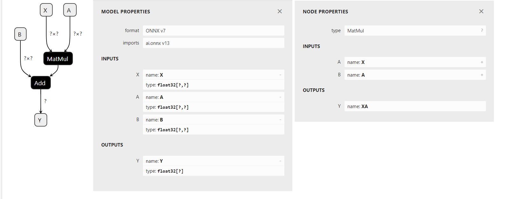
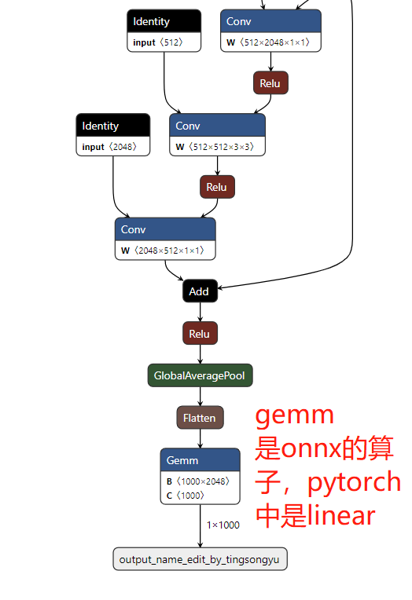
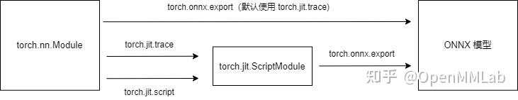
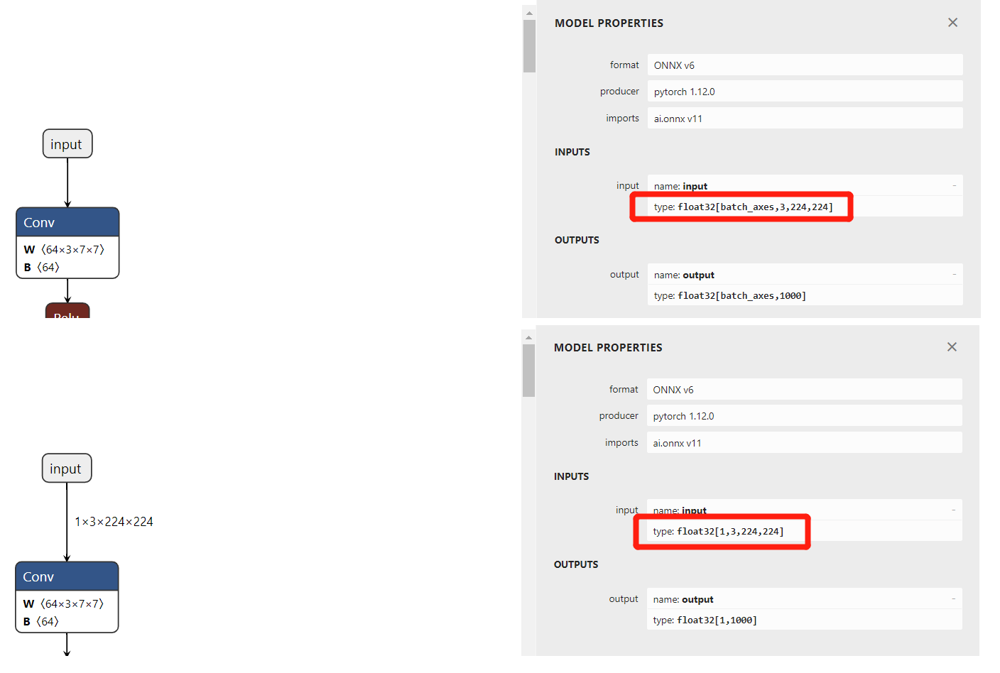

11.1 ONNX 简介与安装
前言
在深度学习算法开发过程中，模型训练与部署是两个环节，pytorch通常只用于训练，获得模型权重文件，而最终部署还有专门的部署平台，例如TensorRT、NCNN、OpenVINO等几十种部署推理平台。
如何将pytorch模型文件让几十种部署推理平台能接收与读取是个大问题。即使各推理平台都适配pytorch，那还有其他训练框架也要适配，是非常麻烦的。
假设有N个训练框架，M个推理框架，互相要适配，那就是O(NM)的复杂度。如果能有一种中间格式作为一个标注，能被所有框架所适配，那复杂度顺便降低为O(N+M)。
onnx就是为了降低深度学习模型从训练到部署的复杂度，由微软和meta在2017年提出的一种开放神经网络交换格式，目的在于方便的将模型从一个框架转移到另一个框架。
本小结就介绍onnx基础概念、pytorch模型导出onnx模型。
ONNX 简介
ONNX （Open Neural Network Exchange，开放神经网络交换格式）是一种开放的、跨平台的深度学习模型交换格式，可以方便地将模型从一个框架转移到另一个框架。
onnx最初由微软和meta在2017年联合发布，后来亚马逊也加入进来，目前已经成为行业共识，目前已经有50多个机构的产品支持onnx。
onnx最大的优点是简化了模型部署之间因框架的不同带来的繁琐事，这就像普通话。在中国129种方言之间要互相通信是很困难的，解决办法就是设计一种可以与129种语言进行转换的语言——普通话。onnx就是一个支持绝大多数主流机器学习模型格式之间转换的格式。
采用pytorch进行模型开发时，部署环节通常将pytorch模型转换为onnx模型，然后再进行其他格式转换，或者直接采用onnx文件进行推理，在本章节就介绍采用onnx文件进行推理的方法。
ONNX 基础概念
onnx文件是一种计算图，用于描述数据要进行何种计算，它就像是数学计算的语言，可以进行计算的操作称之为操作符——operator，一系列operator构成一个计算图。
计算图中包含了各节点、输入、输出、属性的详细信息，有助于开发者观察模型结构。
下面通过一个线性回归模型的计算图来了解onnx的计算图
可以采用python代码构建onnx计算图，运行配套代码，构建了一个线性回归模型
from onnx import TensorProto
from onnx.helper import (
make_model, make_node, make_graph,
make_tensor_value_info)
# 'X' is the name, TensorProto.FLOAT the type, [None, None] the shape
X = make_tensor_value_info('X', TensorProto.FLOAT, [None, None])
A = make_tensor_value_info('A', TensorProto.FLOAT, [None, None])
B = make_tensor_value_info('B', TensorProto.FLOAT, [None, None])
Y = make_tensor_value_info('Y', TensorProto.FLOAT, [None])
node1 = make_node('MatMul', ['X', 'A'], ['XA'])
node2 = make_node('Add', ['XA', 'B'], ['Y'])
graph = make_graph([node1, node2], # nodes
'lr', # a name
[X, A, B], # inputs
[Y]) # outputs
onnx_model = make_model(graph)
with open("linear_regression.onnx", "wb") as f:
f.write(onnx_model.SerializeToString())
运行以上代码会获得linear_regression.onnx文件，可通过https://netron.app/ 进行可视化

图中
- A, B, X, Y表示输入输出数据
- 黑色的MatMul和Add是Node，表示具体的操作
- format：表示生成该onnx文件的onnx版本
- imports：operator的版本；算子是onnx中最重要的一个概念，大多数模型不成功是因为没有对应的算子，因此算子集的版本选择很重要；
- inputs和outputs：是输入和输出，其中type是数据类型以及shape。
为了进一步了解onnx文件，下面导出一个resnet50进行观察，onnx文件可通过以下代码获得：
import torchvision
import torch
model = torchvision.models.resnet50(pretrained=False)
dummy_data = torch.randn((1, 3, 224, 224))
with torch.no_grad():
torch.onnx.export(model, (dummy_data),
"resnet50.onnx",
opset_version=11,
input_names=['input_name_edit_by_tingsongyu'],
output_names=['output_name_edit_by_tingsongyu'])
下面再看一个resnet50的onnx文件，观察更多算子的描述。

更多onnx基础概念参见官网：https://onnx.ai/onnx/intro/concepts.html
ONNX 的operator
上面介绍了onnx文件主要定义了计算图，计算图中的每个操作称为算子，算子库的丰富程度，直接决定了onnx可以表示模型的种类。
关于onnx支持哪些算子，一定要上官网看一看。
对于普通用户，需要关注使用时的opset是哪个版本，目前最新版本是20。算子库可通过以下函数查看。
import onnx
print(onnx.version, " opset=", onnx.defs.onnx_opset_version())
关于算子的理解，以及不适配问题，推荐OpenMMLab的三篇博文
https://zhuanlan.zhihu.com/p/479290520：讲解了pytorch转onnx时，每一个操作是如何转换到onnx算子的；介绍了算子映射关系
https://zhuanlan.zhihu.com/p/513387413：讲解了三种添加算子的方法
其中有一张图对于理解pytorch转onnx很有帮助，这里引用一下：

ONNX 安装
onnx的安装很简单：pip install onnx
在这里，提前说一下，onnx是onnx，与onnxruntime不是同一个东西，它们要分开安装，也要分开理解。
pytorch导出onnx
pytorch模型导出为onnx调用torch.onnx.export函数即可，该函数包含很多参数，这里只介绍几个常用的，更多的参考官方文档
torch.onnx.export(model, args, f, export_params=True, verbose=False, training=, input_names=None, output_names=None, operator_export_type=, opset_version=None, do_constant_folding=True, dynamic_axes=None, keep_initializers_as_inputs=None, custom_opsets=None, export_modules_as_functions=False)
- model: 需要被转换的模型，可以有三种类型， torch.nn.Module, torch.jit.ScriptModule or torch.jit.ScriptFunction
- args：model输入时所需要的参数，这里要传参时因为构建计算图过程中，需要采用数据对模型进行一遍推理，然后记录推理过程需要的操作，然后生成计算图。args要求是tuple或者是Tensor的形式。一般只有一个输入时，直接传入Tensor，多个输入时要用tuple包起来。
- export_params: 是否需要保存参数。默认为True，通常用于模型结构迁移到其它框架时，可以用False。
- input_names：输入数据的名字， (list of str, default empty list) ，在使用onnx文件时，数据的传输和使用，都是通过name: value的形式。
- output_names：同上。
- opset_version：使用的算子集版本。
- dynamic_axes：动态维度的指定，例如batchsize在使用时随时会变，则需要把该维度指定为动态的。默认情况下计算图的数据维度是固定的，这有利于效率提升，但缺乏灵活性。用法是，对于动态维度的输入、输出，需要设置它哪个轴是动态的，并且为这个轴设定名称。这里有3个要素，数据名称，轴序号，轴名称。因此是通过dict来设置的。例如dynamic_axes={ "x": {0: "my_custom_axis_name"} }， 表示名称为x的数据，第0个轴是动态的，动态轴的名字叫my_custom_axis_name。通常用于batchsize或者是对于h,w是不固定的模型要设置动态轴。
接下来以resnet50为例，导出一个在ImageNet上训练好的分类模型，再通过netron观察区别。
下面使用配套代码导出三个模型，分别是bs=1, bs=128， bs为动态的，下一节将对比两者效率。
import torchvision
import torch
model = torchvision.models.resnet50(weights=torchvision.models.ResNet50_Weights.IMAGENET1K_V1)
if __name__ == '__main__':
op_set = 13
dummy_data = torch.randn((1, 3, 224, 224))
dummdy_data_128 = torch.randn((128, 3, 224, 224))
# 固定 batch = 1
torch.onnx.export(model, (dummy_data), "resnet50_bs_1.onnx",
opset_version=op_set, input_names=['input'], output_names=['output'])
# 固定 batch = 128
torch.onnx.export(model, (dummdy_data_128), "resnet50_bs_128.onnx",
opset_version=op_set, input_names=['input'], output_names=['output'])
# 动态 batch
torch.onnx.export(model, (dummy_data), "resnet50_bs_dynamic.onnx",
opset_version=op_set, input_names=['input'], output_names=['output'],
dynamic_axes={"input": {0: "batch_axes"},
"output": {0: "batch_axes"}})
对比如下图所示，input的type中，shape一个是1，一个是batch_axes，其中batch_axes这个就是自定义的命名。

小结
本小节介绍了onnx提出的目的与意义，还有基础概念，onnx可以作为一个中间格式，被绝大多数框架所适配，方便开发人员从训练框架转到开发框架。
onnx文件核心是记录模型的计算图，包括输入数据、各操作节点、输出数据等信息。
最后介绍了pytorch导出onnx的方法，其中需要主要的是op_set版本，以及动态维度的设置。
下一小节，将利用本节导出的onnx模型文件，在onnx的推理库——onnxruntime上进行推理以及性能效率评估。